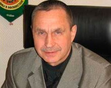
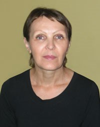

В разделе представлены рассказы, очерки, повести афганской тематики. Это послевоенная проза, в которой происходит осмысление многих больных вопросов афганской войны. Это результат литературной обработки свидетельств, впечатлений, и размышлений очевидцев военных действий в Афганистане. Это слезы матерей, потерявших сыновей, и жен, оставшихся вдовами, представленные в художественных образах. Это дань уважения к памяти погибших и выживших в афганской войне 1979–1989 гг.
Бобров Виктор Васильевич
Бобров, В. В. Южный рубеж : Мифы и реальность / В. В. Боборов. – Новосибирск: Изд-во СО РАН, 2002. – 452 с.
Марченко Валерий Григорьевич
Валерий Марченко – председатель Витебской городской организации ветеранов войны в Афганистане «Братство».
Валерий Марченко – председатель Витебской городской организации ветеранов войны в Афганистане «Братство».
Награжден двумя орденами Красной Звезды и орденом Красного Знамени Республики Афганистан.
О своем боевом опыте Валерий Марченко решил рассказать современникам в своих мемуарах. Первую книгу он назвал «Афган. Разведка ВДВ в действии». Книга разошлась мгновенно и получила хорошие отзывы.
Марченко, В. Афганистан: разведка ВДВ в действии : документальная повесть / В. Марченко // Витебские вести. – 2017. – 26 янв. – С. 21 ; 2 февр. – с. 21 ; 16 февр. – С. 21 ; 23 февр. – С. 21.
Паншин Александр
Паншин, А. Цена мужества / А. Паншин // Віцьбічы = Витьбичи. — 1997. — 14 февр. — С. 6.
Харкевич Галина Николаевна
Галина Харкевич – бывший руководитель поискового клуба «Красный кливер». В «афганскую» тему вложила собственную душу, вместе со старшеклассниками посещая семьи погибших, собирая фотографии и личные вещи солдат, проходивших службу в Афганистане. Организовывала вечера памяти, выставки. Многих родителей погибших воинов-«афганцев», позволивших прикоснуться к своей боли, знала близко – по переписке, по встречам.
...О зное, о чувствах, о Родине
Литературный ресурс «ЛитВек»